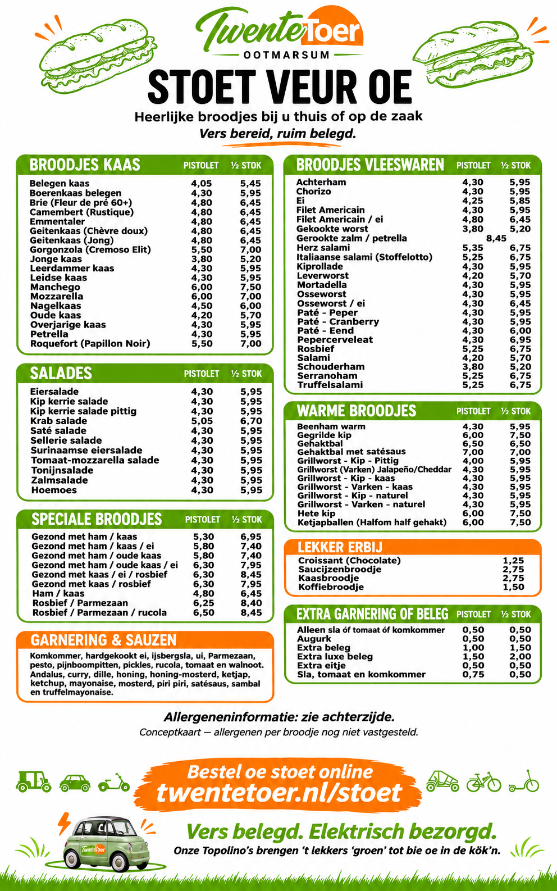
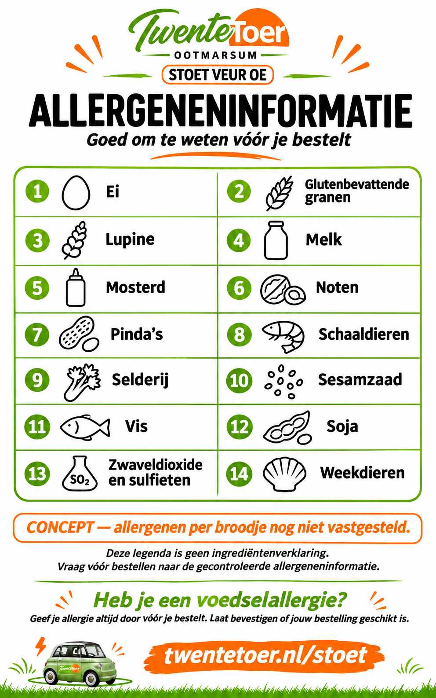

Voorzijde · stoetkaart

Achterzijde · allergenenlegenda

De vormgegeven kaart met een voor- en achterkant.
Oorspronkelijk visueel concept. De allergenen per broodje zijn nog niet vastgesteld. De afgebeelde Topolino is nog groen; de werkelijke voertuigen zijn mat lichtblauw.

